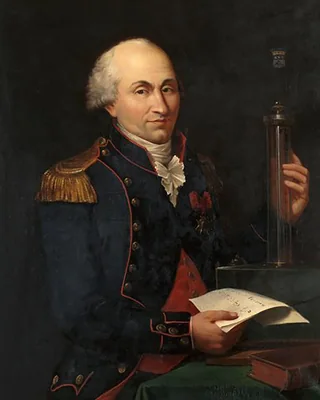
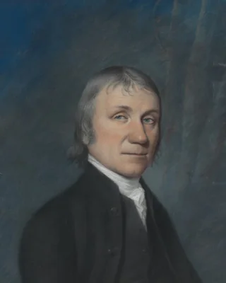
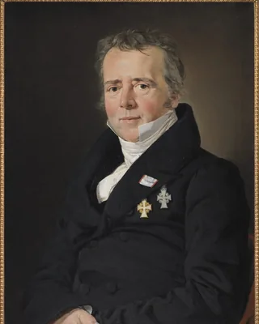
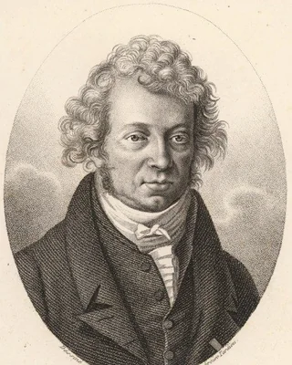
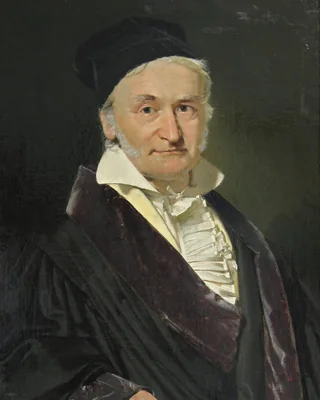
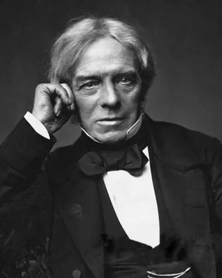
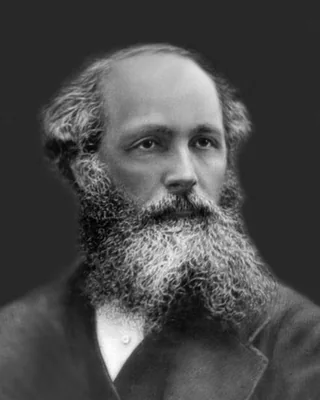
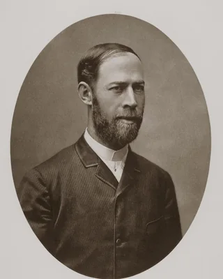
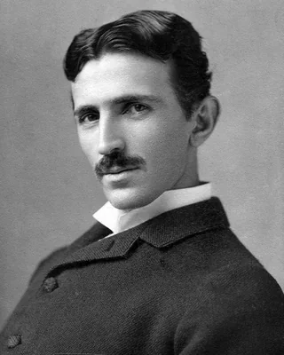
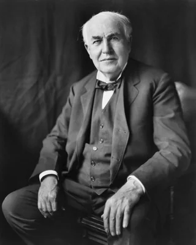

电与磁，一条线讲到底
这一页只有一个主角：场。你会先看见它是什么样，再看见它为什么会变，最后看见电和磁其实是同一件事。
先做三件桌上就能做的事。一、塑料尺在头发上擦几下，靠近碎纸屑，纸屑会跳起来。二、冬天脱毛衣，噼啪响，关灯能看见小火花。三、把指南针放在通电的导线旁边，针会偏。
前两件是电，第三件是磁。它们在中学课本里是两章，在这一页里是同一条线的两段。
那先说个不对劲的地方：尺子和纸屑没有碰到，头发和尺子也没有碰到。指南针和导线也没碰到。那它们是怎么互相推动的？
答案是第二个：空间本身被改变了。"空气传力"说不通——真空里电照样推；"细线连着"是古人的想法，后来被实验否掉了。往下七节，就是把这句话说清楚。
这一页会用到几个公式，但每个公式前面都先有一段现象。如果你某处卡住了，先记住现象，公式可以先放着。
电是什么：会推、会吸，还能被"搬"走
现象。摩擦没有"造出"电。它只是把本来就在原子里的电子，从一个物体搬到了另一个物体上。擦完，尺子多了电子（带负电），头发少了电子（带正电）。
电荷只有两种脾气：同种相斥，异种相吸。这一页后面所有的"吸"和"斥"，追到底都是这一条。
电量小到什么程度？得按个数数。一个电子带的电量永远是同一个数，叫元电荷：
反着算一下：1 库仑是多少个电子？ 1 ÷ 1.602×10⁻¹⁹ = 6.24 × 10¹⁸ ——六百多亿亿个。所以"1 库仑"是个大得离谱的电量，日常生活里你遇到的通常是微库仑级（百万分之一库仑）。
力有多大：库仑定律
跟两个电量相乘成正比，跟距离的平方成反比。光看公式没感觉，代入数字才有：
| 两个电荷 | 距离 | 力 | 什么感觉 |
|---|---|---|---|
| 各 1 库仑 | 1 米 | 8.99 × 10⁹ N | ≈ 92 万吨压上来。所以现实里不存在"1 库仑的带电小球"。 |
| 各 1 微库仑 | 10 厘米 | 0.90 N | ≈ 托起一个鸡蛋。这才是摩擦起电的真实档位。 |
距离从 10 cm 拉到 20 cm（翻倍），力变成 1/2² = 1/4。试着把滑块拖到最右端，看着这个数掉下去——这就是"平方反比"的手感，不用背。
场是什么：空间里写下的一份"说明书"
现象。把第二个电荷放到任何一个位置，它受到的力立刻就能算出来——不需要等信号传过去。这说明：空间里已经写好了每个位置的答案。
这份"说明书"就是场。每一点都记着两件事：这个方向、这个大小。
注意最后一条：画几条是画图人的选择，不是自然的规定。所以"场线密度"必须有约定才可比——下一节的高斯定律就是给这个约定定规矩的。
如果把电荷的电量翻倍，一个位置的场会怎样？
翻倍。场与源头电荷成正比，与位置的距离平方成反比——两句话，一条说源头，一条说空间。
高斯：给场找到源头
现象。在一个电荷外面随便套一个封闭的袋子（球、方块、歪的都行），数一数有多少条场线穿出去——不管袋子多大，穿出去的线条数都一样。
这就是高斯定律：穿过封闭面的总线条数，只由面里包了多少电荷决定。面变大变小时，线变稀但数目不变。
面变大，线变稀，但总数不变——因为源头电荷没变。这就是"场有源头"的意思：电场的源头是电荷，这一点电和磁不一样（磁没有单独的"磁荷"）。
这里有个容易滑过去的点：高斯定律对"任意形状的袋子"都成立，这件事本身不显然。它的证明需要一点积分，这里先记住结论和它的物理含义。
电流：让电荷动起来
现象。按开关，灯立刻亮。但导线里那些电子，其实爬得很慢——每秒零点几毫米。
不矛盾：动起来的是推挤，不是电子本身。就像水管里全是水，你一开水龙头，出口立刻出水，但水管里那滴水要很久才流到出口。电信号的速度接近光速：
电流是电荷的流动，单位时间流过多少电荷：I = Q / t，1 安培 = 每秒 1 库仑，也就是每秒约 6.24 × 10¹⁸ 个电子。
灯亮的速度，由什么决定？
第二个。电流不是"电子搬家"，是电场在导线里几乎同时铺开。这条认知很关键——它是后面"磁由电流产生"的基础。
电荷动起来之后，屏幕右边的场线会变：从"四散的直线"变成"围着导线转的圈"。下一节就是这件事的发现现场。
磁：一次课堂上的意外，把两条线接上了
现象。1820 年，奥斯特在课堂上把通电导线放在小磁针上方，磁针动了。这一下把"电"和"磁"两门课接成了一条。
关键条件是：电荷必须动。静止的电荷只产生电场；一旦运动起来，空间里就多出一样东西——磁场。它的场线和电场完全不同：电场线从电荷出发向外，磁场线是围着导线转的闭合圈，没有起点也没有终点。
同一条导线旁边，磁针怎么偏？用右手定则：右手大拇指指电流方向，四指绕的方向就是磁场方向。别背公式，先用手试一次。
这里先跳过一件事：磁铁为什么也有磁场？它内部有微观的环形电流（电子自旋和轨道运动）。这句话现在只需要知道结论，细节留到以后。
变化生电：法拉第的那十年
现象。磁铁插进线圈，电流表动一下；磁铁停在线圈里不动，表回零；磁铁拔出来，表又动一下——反向。
奥斯特说明"电能生磁"。法拉第反过来想：磁能不能生电？他试了近十年，一直失败。原因是他一直让磁铁静止。
答案是：只有磁通量变化时才产生电流。静止的磁铁不产生电，"变化"才是开关。
停在两端不动时读数接近 0；只有移动过程中才有读数，而且反向移动时符号翻转。这就是发电厂里所有发电机的原理——水推着磁铁动起来，电就出来了。
统一：把四条规则并成一句话
现象。把"电生磁"和"磁生电"两条并排放在一起，会发现它们是对称的——一边变，另一边就动。
麦克斯韦做的事，是把这个对称性写成方程，然后发现了一个要命的后果：变化的电场会产生磁场，这个磁场的变化又会产生电场——它可以自己接力跑下去，不需要任何电荷，也不需要任何磁铁。
接着算它的速度：从两个电磁常数算出来的传播速度是 1/√(ε₀μ₀) ≈ 3 × 10⁸ m/s——正好是光速。
于是麦克斯韦写下那句话：光就是电磁波。二十多年后赫兹在实验室里造出了它，证明了这件事。
这一站是真的难。上面那段"自己接力"的推导，完整版要用偏微分方程。这一页的目标不是让你会算，而是让你知道四条规则并成一条之后，多出来的是"波"。
应用：插座里为什么是交流
现象。家里的插座给的是交流电：中国是 220 V、50 Hz——每秒方向翻转 100 次。为什么不给直流？
因为变压器只能用交流。变压器靠"变化生电"工作：变化的磁场在线圈里感应出电压。直流不变化，变压器就失效。
而变压器是远距离输电的关键：发电厂用高压（几十万伏）送出去，路上损耗小；到小区再降到 220 V 送进家。没有交流，就没有现代电网。
这就是 1880 年代那场"电流之战"：爱迪生推直流（他已经铺了直流电网），特斯拉和西屋推交流。交流赢了，因为它能变压。
| 直流 DC | 交流 AC | |
|---|---|---|
| 方向 | 不变 | 周期性反向（中国 50 Hz） |
| 能不能变压 | 不能（用变压器） | 能——靠电磁感应 |
| 远距离输电 | 损耗大 | 高压送、低压用，损耗小 |
| 历史结果 | 爱迪生阵营 | 特斯拉/西屋阵营，胜出 |
顺带一句：你手机充电器把交流变成低压直流——所以它其实是"电流之战"两边在同一个插头里握手。
这条链上的十个人
顺着这条线走下来，每一站都对应一个具体的人。

库仑把静电力量成了平方反比
普利斯特利更早猜到"跟距离平方成反比"
奥斯特课堂意外：电流让磁针动了
安培把这件事算成了规律
高斯给场找到了源头
法拉第十年实验，找到"变化生电"
麦克斯韦把四条并成一条，看见了光
赫兹把电磁波真的做出来
特斯拉交流电与感应电动机
爱迪生对手阵营；电灯与直流电网两轮找错：把刚才的东西压一遍
第一轮：下面哪句是错的？
错在第一句：电子爬得极慢（零点几毫米每秒）；快到光速的是电场在导线里铺开的速度，也就是信号的速度。灯亮得快，不是因为电子跑得快。
第二轮：下面哪句是错的？
错在第二句：至今没有发现单独的磁荷（磁单极子）。磁场的线永远是闭合的圈——正因如此，麦克斯韦方程里"磁"那条才写成"穿过封闭面为零"。这也正是电与磁不完全对称的地方。
用 60 秒，把这一页讲一遍
检验标准只有一个：能不能不用公式，讲给一个没学过的人听。讲不下去的地方，就是你真正没懂的地方——回到那一节。
如果只能记住一句：电荷产生电场；电荷一动，就有磁场；磁场一变，又生出电场——它们可以自己接力，光就是这么跑的。